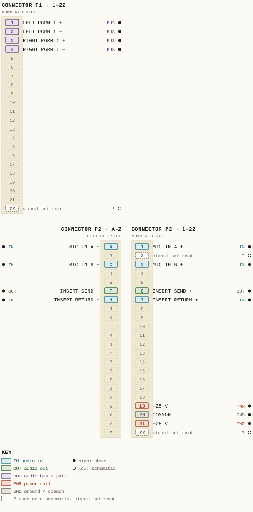
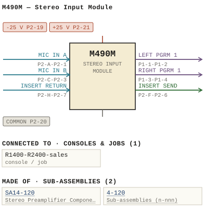

M490M — Stereo Input Module
| Type | module |
| Category | INPUT-PRE-AMPS |
| Try it | simulator & front panel · download package (zip) |
| Earliest dated evidence | 1988|21 — manual issue date |
| Evidence | "Issue #2 May 27, 1988" in PUBLIC/Manuals + tech DOCUMENTS/Modules/M490M - Stereo Input Module/M490M - P029 - SA14-120.jpg |
| Confidence | high |
| All years found | 1988|21, 1992|25 |
| Used in jobs | R1400-R2400-sales |
| Variants | M490, M490A, M490B, M490C, M490D, M490E, M490F, M490G, M490H, M490J, M490K, M490L, M490N, M490T |
| Folder | Modules/INPUT-PRE-AMPS/M490M |
| Folder | PHOTOS/Drawings |
Connections and circuit (ideal SPICE model)
Drawn live from its RTO-144 connections: run the generator, turn the gain, watch the VU. Open the netlist to see how the model is built.
Pictures


M490M.pinout.svg

M490M.connections.svg 1988 - M490M - P029 - SA14-120.jpg
1988 - M490M - P029 - SA14-120.jpg 1992 - M490M - P001 - Title Page.jpg
1992 - M490M - P001 - Title Page.jpg 1988 - M490M - 14-120-02-001 - COMMON COMMON SPEC IFIED LAST COMPONENT DESIGNA.jpg
1988 - M490M - 14-120-02-001 - COMMON COMMON SPEC IFIED LAST COMPONENT DESIGNA.jpg 1988 - M490M - 14-120-02-001 - UNLESS OTHERWISE SPECIFIED IODES ARE.jpg
1988 - M490M - 14-120-02-001 - UNLESS OTHERWISE SPECIFIED IODES ARE.jpg 1988 - M490M - 14-120-06-001 - STEREO PREAMPLIFIER COMPONENT LAYOUT.jpg
1988 - M490M - 14-120-06-001 - STEREO PREAMPLIFIER COMPONENT LAYOUT.jpg 1988 - M490M - 490-01-013 - OFFA ON-START TIMER RESET OFF TALLY OFF.jpg
1988 - M490M - 490-01-013 - OFFA ON-START TIMER RESET OFF TALLY OFF.jpg 1988 - M490M - 490-01-013 - STEREO INPUT MODULE FUNCTIONAL.jpg
1988 - M490M - 490-01-013 - STEREO INPUT MODULE FUNCTIONAL.jpg 1988 - M490M - 490-02-013 - CRIZ OFF EXT.jpg
1988 - M490M - 490-02-013 - CRIZ OFF EXT.jpg 1988 - M490M - 490-02-013 - LAST COMPONENT DESICMAT IONS.jpg
1988 - M490M - 490-02-013 - LAST COMPONENT DESICMAT IONS.jpg 1988 - M490M - 490-04-026 - STEREO INPUT MODULE MODULE LAYOUT (2).jpg
1988 - M490M - 490-04-026 - STEREO INPUT MODULE MODULE LAYOUT (2).jpg 1988 - M490M - 490-04-026 - STEREO INPUT MODULE MODULE LAYOUT.jpg
1988 - M490M - 490-04-026 - STEREO INPUT MODULE MODULE LAYOUT.jpg 1988 - M490M - 490-04-026 - SWI DSI.jpg
1988 - M490M - 490-04-026 - SWI DSI.jpg 1988 - M490M - 490-06-023 - STEREO INPUT MODULE COMPONENT LAYOUT.jpg
1988 - M490M - 490-06-023 - STEREO INPUT MODULE COMPONENT LAYOUT.jpg 1988 - M490M - 490-06-023.jpg
1988 - M490M - 490-06-023.jpg 1988 - M490M - P002.jpg
1988 - M490M - P002.jpg 1988 - M490M - P003 - 1-1.jpg
1988 - M490M - P003 - 1-1.jpg 1988 - M490M - P004 - 1-2.jpg
1988 - M490M - P004 - 1-2.jpg 1988 - M490M - P005 - 2-1.jpg
1988 - M490M - P005 - 2-1.jpg 1988 - M490M - P006 - 2-2.jpg
1988 - M490M - P006 - 2-2.jpg 1988 - M490M - P007 - 3-1.jpg
1988 - M490M - P007 - 3-1.jpg 1988 - M490M - P008 - 3-2.jpg
1988 - M490M - P008 - 3-2.jpg 1988 - M490M - P009 - 4-1.jpg
1988 - M490M - P009 - 4-1.jpg 1988 - M490M - P010 - 4-2.jpg
1988 - M490M - P010 - 4-2.jpg 1988 - M490M - P011 - 4-3.jpg
1988 - M490M - P011 - 4-3.jpg 1988 - M490M - P012 - 4-4.jpg
1988 - M490M - P012 - 4-4.jpg 1988 - M490M - P013 - 4-5.jpg
1988 - M490M - P013 - 4-5.jpg 1988 - M490M - P014 - 5-1.jpg
1988 - M490M - P014 - 5-1.jpg 1988 - M490M - P015 - 5-2.jpg
1988 - M490M - P015 - 5-2.jpg 1988 - M490M - P016 - 5-3.jpg
1988 - M490M - P016 - 5-3.jpg 1988 - M490M - P017 - 5-4.jpg
1988 - M490M - P017 - 5-4.jpg 1988 - M490M - P018 - 5-5.jpg
1988 - M490M - P018 - 5-5.jpg 1988 - M490M - P019 - 5-6.jpg
1988 - M490M - P019 - 5-6.jpg 1988 - M490M - P020 - 5-7.jpg
1988 - M490M - P020 - 5-7.jpg 1988 - M490M - P021 - 5-8.jpg
1988 - M490M - P021 - 5-8.jpg 1988 - M490M - P022 - 6-1.jpg
1988 - M490M - P022 - 6-1.jpg 1988 - M490M - P023 - 6-2.jpg
1988 - M490M - P023 - 6-2.jpg 1988 - M490M - P028.jpg
1988 - M490M - P028.jpg 1988 - M490M - P030 - SA14-120 - 1-1.jpg
1988 - M490M - P030 - SA14-120 - 1-1.jpg 1988 - M490M - P031 - SA14-120 - 1-2.jpg
1988 - M490M - P031 - SA14-120 - 1-2.jpg 1988 - M490M - P032 - SA14-120 - 2-1.jpg
1988 - M490M - P032 - SA14-120 - 2-1.jpg 1988 - M490M - P033 - SA14-120 - 2-2.jpg
1988 - M490M - P033 - SA14-120 - 2-2.jpg 1988 - M490M - P034 - SA14-120 - 2-3.jpg
1988 - M490M - P034 - SA14-120 - 2-3.jpg 1988 - M490M - P035 - SA14-120 - 2-4.jpg
1988 - M490M - P035 - SA14-120 - 2-4.jpg 1988 - M490M - P036 - SA14-120 - 2-5.jpg
1988 - M490M - P036 - SA14-120 - 2-5.jpg 1988 - M490M - P037 - SA14-120 - 2-6.jpg
1988 - M490M - P037 - SA14-120 - 2-6.jpg 19xx - 14-120-06-001 - SA14-120 STEREO PREAMPLIFIER COMPONENT LAYOUT - ISS 2.jpg
19xx - 14-120-06-001 - SA14-120 STEREO PREAMPLIFIER COMPONENT LAYOUT - ISS 2.jpg 1990 - R1400 - R2400 - 011.jpg
1990 - R1400 - R2400 - 011.jpgPrice history
| Year | Kind | Price | Listed as | Effective | Source |
|---|---|---|---|---|---|
| 2005|38 | used market value | 100.00 | M490M Stereo Input | wbsps - website ARCHIVE/WBSPS 2008/ARCHIVE/old website/PriceGuide.htm | |
| 2006|39 | used market value | 100.00 | M490M Stereo Input | wbsps - website ARCHIVE/WBSPS 2008/ARCHIVE/jan 2006 shell/priceguide.htm |
Pinout & connections
Each contact as its own documents name it: 15 named (15 high confidence). An empty slot is a contact no page names. Hover a contact for its source; the table under the drawing lists them.
pinout (SVG) · connections (SVG) · pins (JSON)
Pin evidence — 18 contacts
| Pin | Signal | Kind | Confidence | Read from | Source |
|---|---|---|---|---|---|
| P1-1 | LEFT PGRM 1 | audio bus / pair | high | rto-144 | M490M.rto144.json, p. 1 |
| P1-2 | LEFT PGRM 1 | audio bus / pair | high | rto-144 | M490M.rto144.json, p. 1 |
| P1-3 | RIGHT PGRM 1 | audio bus / pair | high | rto-144 | M490M.rto144.json, p. 1 |
| P1-4 | RIGHT PGRM 1 | audio bus / pair | high | rto-144 | M490M.rto144.json, p. 1 |
| P1-22 | — | used on a schematic, signal not read | low | schematic | 1988 - M490M - 490-04-026 - SWI DSI.jpg, p. 1 “P1-22” |
| P2-A | MIC IN A | audio in | high | rto-144 | M490M.rto144.json, p. 1 |
| P2-1 | MIC IN A | audio in | high | rto-144 | M490M.rto144.json, p. 1 |
| P2-2 | — | used on a schematic, signal not read | low | schematic | 1988 - M490M - Stereo Input Module (2).pdf, p. 31 “P2 - 2 2” |
| P2-C | MIC IN B | audio in | high | rto-144 | M490M.rto144.json, p. 1 |
| P2-3 | MIC IN B | audio in | high | rto-144 | M490M.rto144.json, p. 1 |
| P2-F | INSERT SEND | audio out | high | rto-144 | M490M.rto144.json, p. 1 |
| P2-6 | INSERT SEND | audio out | high | rto-144 | M490M.rto144.json, p. 1 |
| P2-H | INSERT RETURN | audio in | high | rto-144 | M490M.rto144.json, p. 1 |
| P2-7 | INSERT RETURN | audio in | high | rto-144 | M490M.rto144.json, p. 1 |
| P2-19 | -25 V | power rail | high | rto-144 | M490M.rto144.json, p. 1 |
| P2-20 | COMMON also: COMMON (rto-144) | ground / common | high | rto-144 | M490M.rto144.json, p. 1 |
| P2-21 | +25 V | power rail | high | rto-144 | M490M.rto144.json, p. 1 |
| P2-22 | — | used on a schematic, signal not read | low | schematic | 1988 - M490M - 490-04-026 - SWI DSI.jpg, p. 1 “P2-22” |
Dates found in the documents
| Year | Kind | Text | File |
|---|---|---|---|
| 1988|21 | manual issue date | Issue #2 May 27, 1988 |
1988 - M490M - P029 - SA14-120.jpg |
| 1992|25 | month & year | February 24.1992 |
1992 - M490M - P001 - Title Page.jpg |
Physical manual inventory
| Item | Location | Status | Scanned |
|---|---|---|---|
| M490M - Stereo Input Module | DUPLICATE | SCANNED BUT NEEDS STICHING | |
| M490M - Stereo Input Module | PDF - Already scanned | ||
| M490M - Stereo Input Module | Recently scanned and stiched by WB |
Documents (2)
| Year | File | |
|---|---|---|
| 1988|21 | 1988 - M490M - Stereo Input Module (2).pdf | note |
| 1988|21 | 1988 - M490M - Stereo Input Module.pdf | note |
Photos & scans (46)


Sub-assemblies & parts used (2)
| Item | What | Family | Year | How we know |
|---|---|---|---|---|
| SA14-120 | Stereo Preamplifier Component Layout | Circuit boards (SA14-nnn) | drawing filed with it | |
| 4-120 | Sub-assemblies (n-nnn) | named in its manual |
Parts list — board M490M (24 parts)
From 1988 - M490M - P015 - 5-2.jpg, page 1 (scanned); also in timelines/data/bom.csv.
| Ref | Part | Value | Manufacturer | Mfr part no. |
|---|---|---|---|---|
| C41 | uF/25 Philips | 22 | 426ETF22 | |
| C46 | uF/100 Sprague | ICIOXZRIO4MOSOB | ||
| CR7 | INL148 | |||
| R18 | Resistor 1/4w5% Philips | 100 | ||
| R20 | delete | |||
| R25 | Resistor 1/4w 59 Philips | 2.2 | ||
| R27 | delete | |||
| R30 | Resistor 1/4w 59 Philips | 15K | ||
| R34 | delete | |||
| R36 | Resistor 1/LW 30K Philips | 59 | ||
| M490M | STEREO INPUT_MODULE | |||
| R112 | 3w 5% Dale ROZWE-SOR | |||
| R23 | Wing Knob (Black) Elma 3220 | 023 | ||
| R66 | deE ete | |||
| SW2 | SwI Cap (Black/ White) FATOI-BLK/WH | |||
| SW3 | de ete | |||
| SW6 | delete | |||
| SW9 | (Rea) | 328-0071 | ||
| SW12 | (Grey ) FGK-GREY | |||
| U2 | u5,u6 u3_ Pin Dip Socket Amp | 640463-3 | ||
| C36 | Capacitor pF Philips | 2222-638-10229 | ||
| C38 | uF/10 Kemet | T39OD686MO1OAS | ||
| C48 | uF/10 Kemet | T390B475M010A5 | ||
| U8 | CDLOIGCN |
Consoles & jobs it is connected to (1)
Their own drawings name this module.
| Job | Year | Drawing | Page |
|---|---|---|---|
| R1400-R2400-sales | 1990 - R1400 - R2400 - 011.jpg | 1 |
Named in other drawings & documents (5)
From the manuals
Each manual split into its sections. Text that is the same in many Ward-Beck manuals (warranty, address, standard notes) is kept once on the Boilerplate page and linked.
General description (7)
Description — 290 words · 1988 - M490M - P030 - SA14-120 - 1-1.jpg, page 1
SA4L-120STEREO PREAMPLIFIER ASSEMBLY The SA14- 20 Stereo Preamplifier assembly contains the Left and Right channel preamplifiers Mode Select matrixing, Cue cnannel solid state switches ana buffers for the M49OM/N Stereo Input modules The circuitry for the Left and Right channels are identical, therefore only the description for the Left channel wil De ven . Preamelifier The Left cnannel input appears pins P2 _ 5 & the sub- assembly connector with its ssociated components makes uP the actively balanced input preamplifier The preamplifier gain Mav be varied over dB range DY adjusting RII which accessable from the front panel the Stereo input rodule with sma trim screwdriver The longitudinal rejection the preamplifier input se by the adjustmen R6 _ This control factory set and under normal conditions should not require adjustment Mode Select SW1 along with u2 form the Left channel Mode matrix_ The output from the Left channel fed into this network via R12, while the Rignt channel fed via R14 Selector SWIA.
Tong with the mixing capabilities U2 _ following action pe taken the Left channel signal allows the Pass the Left channel stereo signal 45 supplied the module. "5" position the selector Pass the Left channel only both the Left and Right channels position on the selector Create Mono gnal by mixing the Left and Right channeis together "m" position the ecior = Reverse the routing the Left and Right signals through the Stereo module.
"S" position on the selector Route the Right channel signal into the Left channel "R" position the ector u2 forms the mixing amplifier for the Mode functions The Left channel feed Ou[ U2 coupled through C13 the module connector P2 , also coup ed into the Cue, Auxiliary inverting buffer USA _ 1-1
- source: 1988 - M490M - P030 - SA14-120 - 1-1.jpg, p. 1
Description — 277 words · 1988 - M490M - P011 - 4-3.jpg, page 1
M49om STEREO INPUT MODULE Channel On; Momentary operation the Channel On switch SW9 will produce negative going pulse u8 , pin and preset" the A-section u8 . Alternatively momentary ground losure the Externa Channe On control input P2 , Pin will result the same condition Once the flip-flop "preset" its output pin changes from approximately +10 volts) . This will cause the left and right Program switches switch ON _ Furthermore, 05 wili saturate resulting the Channel On indicator lamp DS3 switch on With 05 saturated the conirol common potential appears the emitters 06 and 07 depending whether Input Selector switch Sw1 SW2 depressed Effectively 06 and 07 operate similarly two AND gates The collectors the two transistors represent the outputs the AND gates They appear at P2, Pin and These terminals are capable sinking maximum current 40 mA each from volt source and may be used for muting purposes When operating the Channel On switch Sw9 separate contact closed, accessible at P2, pins and This contact may be used for simu taneous "machine start" Pin P2 isolated through diode CRS _ When connected parallel with the same output other modules, provides convenient OR gate configuration, suitable reset common imer each time Channel On button depressed Channel Off; Momentary operation the Channel Off switch Sw8 momentary ground closure the External Channel Off control input P2_ pin 12 will result negative going pulse U8 , pin and "clear the A-section u8 producing volts uB pin 15 Consequently the left and right solid state Program switches wil switch OFF 05 wili stop conducting, causing DS3 extinguish, and tne muting control outputs P2 pins and will be disabled _ 4-3
- source: 1988 - M490M - P011 - 4-3.jpg, p. 1
Description — 266 words · 1988 - M490M - P012 - 4-4.jpg, page 1
M49oM STEREO INPUT MODULE separate contact P2, pin and U. available on SW8 and accessible may be used for "machine stop separate Channel Off tally lamp connected P2 , pins and built into Sw8 and addition the norma pushbutton operated Channel Off function both Teft and right solid state Program switches are swi tched off whenever the mixing attenuator moved the "infinite" position and switch Swio closed .
The volt potential developed U7, pin fed directly the two program switches and causes them switch OFF However , the status u8 the Channel On indicator and the muting controln remain unaffected by this operation. Cue; The B-section u8 used control the solid state Cue switches The flip-flop will change state each ti me neg ative going transition takes place pin u8 Consequently with each input pulse, the Cue channels wiii alternate between ON and OFF This change state can be brought about by any one three different methods: Momentary operation the Cue switch switch Sw12 (Q) Momentary ground closure the External Cue control input P2 pin 11 _ Operation the overpress switch Sw11 located the slide ttenuator beyond the "infinite" position.
The ON status the Cue channels which ven by 04 indicated by DS2 , Cue 0ff ; An dditional feature ensures that the Cue channels will Tways switch OFF whenever the slide attenuator moved onto way from the "infinite" position, regarcless their prior state The control gnal for this action initiated by the change state the Attenuator Cut switch Swio.
The resultant level change, being either positive negative going; processed through U7, u9 and U10 _
- source: 1988 - M490M - P012 - 4-4.jpg, p. 1
- also in: 1988 - M490M - P010 - 4-2.jpg, p. 1 · 1988 - M490M - P009 - 4-1.jpg, p. 1 · 1988 - M490M - P013 - 4-5.jpg, p. 1 · 1988 - M490M - P037 - SA14-120 - 2-6.jpg, p. 1
Specifications (2)
Technical Data — 196 words · 1988 - M490M - P003 - 1-1.jpg, page 1
M49OMSTEREO INPUI_MODULE Input Sensitivity: -10 +10 dBm (ref . 600 ohm source) Frequency Response: +/-0.2 dB from Hz to 20 kHz Noise: dB below the nominal operating Ievel , with the mixins tenuatct Sc : fcr d2 "n hand" 20 Hz 20 kHz) Harmonic Distortion Less than 1% Hz to 20 kHz 20 dB above the nominal opera ting evel less Inrul Level : -10 dBm +10 dBm for the nomninal output operating Ievel +21 dBmn maxic mum unity gain_ Input Impedance: 30,000 ohms, actively balanced Source Impedance: 600 ohms or less balanced Common Mode Rejection Ratio: Greater than 50 dB 30 Hz to 15 kHz _ Common Mode Voltage: 50 volts peak maximum_ Output Level : dBm nominal equiva ent voltage into summing networks +25 dBm maximum equivalent voltage.
Output Impedance: 30 ,000 ohms actively balanced for program circuits_ 60,O0o ohms actively balanced for cue circuits. Load Impedance: Less than 0.5 ohm current summing nodes . channel Separation Phasing: 55 dB from 30 Hz kHz . Input and Output terminals designated by numbers are in phase, lower number numbered Pair phase with lower number other numbered pairs_ Power Requ rements: +/-25 volts dc 75 MA
- source: 1988 - M490M - P003 - 1-1.jpg, p. 1
Technical Data — 27 words · 1988 - M490M - P004 - 1-2.jpg, page 1
M49omSTEREO INPUT MODULE Ambient Temperature: degrees Celsius Dimensions: 60" wide 14.15" high 6.50" deep (41 mm 360 mm 165 Mm / Weight: ibs ii.00 kg) nei 1-2
- source: 1988 - M490M - P004 - 1-2.jpg, p. 1
Parts list (text) (3)
Parts List — 109 words · 1988 - M490M - P020 - 5-7.jpg, page 1
M4QM STEREQ INPUTMODULE PART DESCRPTION MFG MFG PARLNUMBER RIS RI6 RHT7 RI8 RI9 Resistor 1/4W 596 3W 506 1/4w 19 [OK Philips Dale Philips CR2S RO3WE-SOR MRZSF ISK ISK 15K R12O ISK Integrated Circuit National Signetics CD4OI6CN NES53AN @ E U10 SWI) SW2) SW3 SW4 SWS SW6 SW7 National Signetics CD4OI6CN NESS3AN National 74CT6N 74COON 74C22IN 6c I/L Pushbutton Assembly ITT WBS ] ]-042 delete 8c A/A Pushbutton Asscmbly WBS 1-043 WBS / /-044 delete SW8 SW9 SWIO SW [[ SW2 Zc MOM Pushbutton Assembly Dialight 544-3221 (part of ATTI) PeG 1550/AH35/[00 Zc MOM Pushbutton Assembly ITT WBS / [-/46 SA [4-120 Stereo Preamplifier Subassembly WBS SA [4-120
5-7
- source: 1988 - M490M - P020 - 5-7.jpg, p. 1
Parts List — 92 words · 1988 - M490M - P017 - 5-4.jpg, page 1
M49om STEREO INPUI_MODULE PART DESCRIPTLON MFG MFG PART_NUMBER RII R12 R13 R1L R15 Resistor 1/4w 5% 10K 15K 15k 5k 47k Philips R16 R1? R18 R19 R2o 5K 20k 100 100 Potentiometer Resistor 1/4w5% Piher Philips PTIOV 20k delete R21 R22 R23 R2L R25 Resistor 1/4w 59 2.2 Philips R26 R27 R28 R29 2 .2 delete R3O R3I R32 R33 R34 Resistor 1/4w 59 15K 15K 15k 15K delete Philips R35 R36 R37 R38 R39 Resistor 1/LW 59 30K 30k 2K2 2K2 Philips R4o R41 R42 R43 R44 100K L70k 1M 10K
- source: 1988 - M490M - P017 - 5-4.jpg, p. 1
Parts List — 77 words · 1988 - M490M - P015 - 5-2.jpg, page 1
ML9OM STEREO INPUT MODULE PART DESCRAPTAON MFG MFG PART_NUMBER Capacitor uF/35 10 uF/25 6800 pF 4F/25 10 UF/25 Kemet T390A 105MO35AS T390C 1O6MO25AS cQ92-MC-100-682m T390C O6m02545 Aselco Keme: uF / 25 uF/25 22 uF/25 22 uF/25 22 uF/25 C41 Philips 426ETF22 C45 C46 C47 uF /25 uF/100 uF/100 Sprague ICIOXZRIO4MOSOB CRI CR2 CR3 CR4 CRS Diode Fairchild 1N4148 IN4003 CR6 CR7 CR8 CR9 CRIO INL148 CRII CR12 CRI3 CRI CRIS CRI6 CRIT CRI8 CRI9 CR2O IN4003 5-2
- source: 1988 - M490M - P015 - 5-2.jpg, p. 1
Drawings (10)
Each scan with its trace laid over it: the slider runs from the scan to the vector drawing. Click one to see it large and save it as SVG, DXF, KiCad, PDF or PowerPoint.
Offa On/Start Timer Reset Off Tally Offviewer
Stereo Input Module Functionalviewer
1988 - M490M - 14-120-02-001 - COMMON COMMON SPEC IFIED LAST COMPONENT DESIGNAviewer
1988 - M490M - 14-120-02-001 - UNLESS OTHERWISE SPECIFIED IODES AREviewer
Criz Off Extviewer
Last Component Desicmat Ionsviewer
1988 - M490M - 14-120-06-001 - STEREO PREAMPLIFIER COMPONENT LAYOUTviewer
Stereo Input Module Component Layoutviewer
1988 - M490M - 490-06-023viewer
SA14-120 STEREO PREAMPLIFIER / COMPONENT LAYOUTviewer
Stereo Input Module Module Layoutviewer
Stereo Input Module Module Layoutviewer
Swi Dsiviewer
Read from the drawing title blocks.
| Drawing | Title | Date | Drawn by | Checked by | Iss. | Source |
|---|---|---|---|---|---|---|
| 490-01-013 | Stereo Input Module Functional | 1 | file | |||
| 490-01-013 | Offa On/Start Timer Reset Off Tally Off | file | ||||
| 490-02-013 | Last Component Desicmat Ions | 3 | file | |||
| 490-02-013 | Criz Off Ext | file | ||||
| 490-04-026 | Stereo Input Module Module Layout | file | ||||
| 490-04-026 | Swi Dsi | file | ||||
| 490-04-026 | Stereo Input Module Module Layout | 1 | file | |||
| 490-06-023 | Stereo Input Module Component Layout | 3 | file | |||
| 490-06-023 | 3 | file | ||||
| B 14-120-06-001 | SA14-120 STEREO PREAMPLIFIER / COMPONENT LAYOUT | 2 | file |